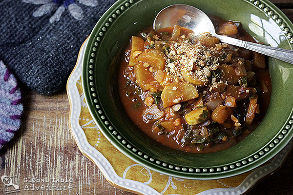

Ingredients
- vegetable oil
- large onion, chopped
- cloves garlic, sliced
- oz can tomato paste
- mostly green plantains
- cups of thinly sliced, loosely packed collard greens (about 1/3 of a bunch)
- 1 quart vegetable broth (or water)
- 1/2 cup peanuts, measured then ground
oil and salt